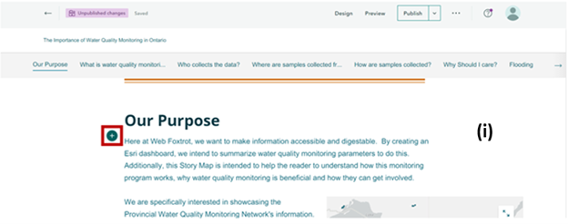

Problem Statement
| Ideal | |
| Ideal | Providing the general public of Ontario access to water quality monitoring data from the Provincial(Stream) Water Quality Monitoring Network. This would be of benefit as it increases interest in water quality and encourages actions to improve environmental conditions. Encourage participation in water security initiatives whether that be legislative or environmental rebate programs for home and community improvements. |
| Reality | Reality | A well designed map and hub for accessing this location does not currently exist for Ontarians. People may be unaware of why they should care about the water quality in their area or unsure of their own agency in this topic. |
| Consequences | |
| Consequences | The lack of accessibility to this data would cause people to continue to be uneducated about existing water quality monitoring programs. This may lead to them feeling detached from water security initiatives. |
| Proposal | |
| Proposal | An ESRI dashboard will be created to display the Provincial(Stream) Water Quality Monitoring Data for Ontario, specifically the water monitoring station locations and the 2021 data for those stations. It will come from the governments open data portal. The dashboard will include a well designed interactive map as well as display a summarization of 5 major water quality monitoring variables. A story map will also be created to describe the process of creating the dashboard as well as general information about this specific water quality monitoring program. This storymap will allow the public to feel more involved in the creation process to foster a better understanding of how the program works, it's benefits to their lives and how they can be involved with water security issues. |
The Team's Journey
Here is the methodology for our solutions as well as an explanation of what worked well for us, what limitations we felt were present considering the software we used, plus our own personal limitations and an explanation of what we feel we could have done better
Phase One: Dashboard
Step One: Data Prep
- Data was downloaded from Ontario's Open data portal. The data sets chosen were: one shp file that showed all of the stations, both active and inactive, and one excel file with collection data for 2020
- The collection dataset had no data location attached so it was joined to the shp file of stations. After this was done the XY Table to point tool was used so it could be mapped. Then a set of a parameters that we wished to represent were selected to create a new feature layer. The parameters selected were: Dissolved oxygen, PH, water temperature, nitrogen, phosphate and e. coli.
- This layer with station location and collection data for our selected parameters was exported to ArcGIS Online and a map was created to be embedded in the dashboard
Step Two: Configuring Dashboard
We chose to use ArcGIS Dashboards to represent the data as it allowed the stations to be viewed on a clean interactive map, similarly to the site for the provincial water quality monitoring network, with the addition to the user being able to see collected data from each station. As the StoryMap will be doing the job of giving background information on water quality monitoring issues, and this water quality monitoring program in particular, the intended focus of the Dashboard was conveying important themes in the data collected at individual stations. The elements of the dashboard can be split into two categories: Dynamic and Static.
Static
The static elements are: an indicator that shows the number of stations as well as the number of years that the program has been running (a) and a reference to recommended water levels (b). The indicator is a ready-to-use widget option within the Dashboard environment.The numerical values are referenced as the total count of distinct station numbers and the max number of total years for a station. This way if records are added to the dataset it can be updated automatically (c). This was a useful discovery because it allows for automatic updating ,which may be the case where automation of collected data into the layer happens. The water level data was added in using the rich text widget, which is a simple text element that can be enhanced using html, but those enhancements weren't necessary for this dashboard.
Dynamic
The dynamic elements of the map make their change once the end user chooses a station. It will tell them how many years the station has been active, what types of collection has happened there and finally the data table of results The Dashboard functionality that was used to make this happen was using layer actions. Layer actions allow you to choose widgets on the Dashboard to be targeted in different ways when a selection is made. The map was the main layer that was configured for layer actions and the indicator, pie chart and data table were the targets and the type of targeting that we used was filtering. When a station is chosen the data is filtered and the targets show the corresponding data.
Discoveries and Limitations
ArcGIS Dashboards gave us the ability to display the map alongside key data points that we thought fit into the overall theme. Integrating the map was simple as it was created in ArcGIS Online so it was readily available as an item to be added into the map. The other widgets were also easy enough to add to the layout and move around to suit our needs. The ease of making configurations came at the expense of certain customizations. For example the header does not allow you to chose the text position, since we wanted it central we used the rich text option, but this mean in order to have the link out to the storymap and source data we still needed to have the header in there.
One discovery that was made but was not implemented for this dashboard was using selectors to allow users to filter the data themselves based on features. While we attempted to do this in different ways the ultimate problem was the way the data was put together in the excel was not ideal for using this feature. This feature would have allowed us to let people filter results by things like parameters or specific locations very easily. The benefit of this discovery is that if there is control over how the data is collected or extra time to sort and clean the data this would enhance the dashboard in a big way.
The design of the Dashboard was centered around the user interacting with it when they click on a station. Before this happens the Dashboard looks quite empty, especially in the dynamic column (a), but it was decided that this was okay because it was easily resolved by introducing interaction. A limitation we faced is that there is no way for the dashboard to default to this selection mode. The interaction that fills the dashboard is dependent on the end-user knowing that they couldn't just click on the stations but instead first had to click the selection tool (b) and then make their selection. We tried to remedy this by including instructions for using the select tool below the map (c), but it's acknowledged that it isn't the most intuitive user interface. A way to filter data without using the select tool would have been by filtering based on scale or zoom. Because the collection data was most relevant when looking at one specific station at a time versus a region we chose not to use it in our dashboard.
A final limitation we experienced was in overall formatting of the rich text window. We had originally wanted to colour code some of our text to match our pie charts as well as other adjustments to the text, and found the settings available to toggle incredibly limited in this regard. Colour blocking and enhanced layout design were unavailable and we really would have preferred a more dynamic solution in this application.
Phase Two: Story Map
Using Esri Story Map functionality, we were able to create and house an area where we will be able to fully tell our story.
This Story Map was made to be simple and to make information digestible for the audience, therefore, the sections are only meant to be summaries of the major information. The steps below show how the story map was created:
Step 1: Create a Custom Story Map Theme
The first step in creating the story map was to create a custom theme using the Story Maps Create a Theme functionality. Creating a custom map theme allows for further cohesion and integration of the story map into the website. In addition to this, by creating your own map theme you are allowed more control and uniqueness
Step 2: Create the flow
The flow of the Story Map was centered around asking the big questions: Who, What, Where, When, How and most importantly, Why. By asking, and answering the most basic questions, we are able to reach a wider audience and help them to understand not only water quality but why it's important to care about what goes on in the water systems.

Step 3: Fill in the Story
Filling in the information was quite simple when it came time for it. Since the flow was set up, all that needed to be done was some plugging in. The Story Map functionality allows for several different formatting options, which can be accessed by hovering over the area you wish to house the information and selecting the plus button that appears (see red box in the image (i))
Image (ii) shows the options available. Because the theme was created prior to this, everything was predetermined. There were different colours set for the different elements (Headings versus paragraphs, for example) so this allowed for formatting to be quite straightforward. Information needed to be inserted under its heading. Pictures were also inserted to help fully tell the story. The more visuals there are, the more engaged readers can be.
Discoveries and Limitations
Overall, creating the Story Map was simple, straightforward and enjoyable. However, there are so formatting gaps that became frustrating. For example, you are unable to horizontally place buttons next to each other, they are only available to be vertically stacked. This takes up valuable space as the user works their way through the Story as it makes it longer in length, unnecessarily.
Solution
Click the images below to explore the final ArcGIS Dashboards and ArcGIS StoryMap created by WebFoxtrot